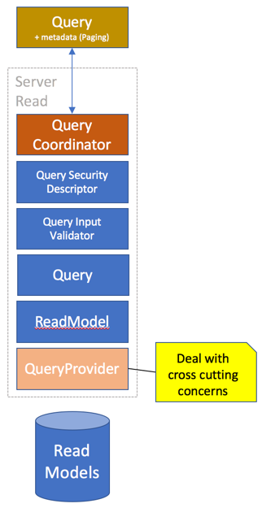

Queries
Bifrost has formalized queries into types. These types are then your contracts for your query capabilities. These queries can be as optimized for the datasource as you see fit for the feature they're being used in.
QueryFor
To implement a query, you basically need to implement the interface IQueryFor<>.
The generic type argument should point to a read model.
This is a marker interface and does not require you implement anything specific.
Instead it is relying on a convention; its looking for a property called Query.
This property needs a getter and can effectively return any type. The type that it
returns is recognized by Bifrost and Bifrost will look for a query provider
for the type returned. By default you could be returning an IQueryable<> - something
Bifrost has a query provider for.
using Bifrost.Read;
public class AllEmployees : IQueryFor<Employee>
{
public IQueryable<Employee> Query { get {....} }
}
The implementation of the query can be anything you want it to be. Use whatever underlying datastore and technique to get to the data. The only rule is that there must be a query provider for the return type.
Bifrost has a very simple repository for read models that can be used. You don't have to use it, as you decide entirely what you use internally - the query sits there as a contract and can also then be changed to accommodate a change in storage strategy.
Arguments
With queries, sometimes you need to filter based on input. Any public property with a getter and a setter is considered an argument for the query.
These can then be part of your query.
using Bifrost.Read;
public class EmployeesHiredAfter : IQueryFor<Employee>
{
IReadModelRepositoryFor<Employee> _repository;
public EmployeesHiredAfter(IReadModelRepositoryFor<Employee> repository)
{
_repository = repository;
}
public DateTime HiredAfter { get; set; }
public IQueryable<Employee> Query => _repository.Query.Where(e => e.HiredDate >= HiredAfter);
}
Validation
The arguments can have validators associated with them. All you need to do is to create something
that inherits from QueryValidationDescriptorFor<> and point the generic argument to the
query type.
using Bifrost.Validation;
using Bifrost.Read.Validation;
public class EmployeeHiredAfterValidator : QueryValidationDescriptorFor<EmployeesHiredAfter>
{
public EmployeeHiredAfterValidator()
{
// Require that hiring date is set after a certain date
ForArgument(e => e.HiredAfter).HasToBeGreaterThan(new DateTime(1985,1,1));
}
}
Paging
Paging is not something you need to think about. This is what the query provider deals with. Paging is a frontend concern and should not something you need to think about. In fact, paging is ideally a view concern, something decided as part of the interaction design. The client representations of queries has functionality related to paging.
Filtering
Some features require filtering the read models on a model level. This could for instance be row level security with complex scenarios making it easier to do it as a post process after data has been received from the datasource.
Bifrost has a global mechanism for filtering.
using System.Collections.Generic;
using System.Linq;
using Bifrost.Read;
public class MyReadModelFilter : ICanFilterReadModels
{
public IEnumerable<IReadModel> Filter(IEnumerable<IReadModel> readModels)
{
var result = new List<IReadModel>();
foreach( var readModel in readModels )
{
if( readModel is Employee && ((Employee)readModel).HiredAfter > new DateTime(1985,1,1) )
result.Add(readModel);
}
return result;
}
}
Note
This solution is not optimal and will be implemented differently as described here.
Security
You secure the read models by adding a security descriptor, similar to how one does with validation in a fluent way.
using Bifrost.Security;
public class QuerySecurity : BaseSecurityDescriptor
{
public QuerySecurity()
{
When
.Fetching()
.ReadModels()
.InNamespace(
typeof(Employee).Namespace,
s => s.User()
.MustBeInRole("ReadAccess"));
}
}
Note
Support for securing specific read models is on the way. Read more here.
Proxy Generation
All queries written in C# has a JavaScript counterpart when using the proxying. Read more about proxy generation here.
QueryResult
At the top of the pipeline sits the QueryCoordinator, this will execute the query and return a
QueryResultobject.
| Property | Type | Description |
|---|---|---|
| Items | IEnumerable |
Contains the items |
| TotalItems | Integer |
Total number of items returned |
| QueryName | Boolean |
Name of the query |
| Exception | Exception |
If there was an exception, this holds the exception |
| SecurityMessages | IEnumerable<string> |
Contains any messages from volated security rules |
| Validation | QueryValidationResult |
Validation details related to the query |
| PassedSecurity | Boolean |
True if passed security |
| Success | Boolean |
True if considered successful |
| Invalid | Boolean |
True if not considered successful |
Pipeline

Query provider - Extension point
Key aspect of the query pipeline is the query provider model, you can extend the behavior for custom return types. Read more about it here.